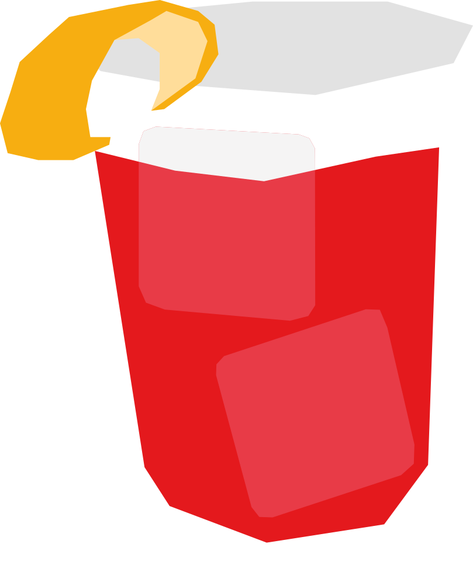

¿Quién se apellida Negroni?
Creado en 1919 en Florencia, cuando el Conde Camillo Negroni le pidió a su bartender que reforzara su Americano habitual sustituyendo la soda por ginebra. El resultado se volvió tan popular que terminó llevando su apellido.
RECETA
- 30 ml gin
- 30 ml Campari
- 30 ml vermut rojo dulce
- Hielo en cubos
- Twist o rodaja de naranja
- Agrega el gin, Campari y vermut a un vaso con hielo.
- Mezcla suavemente hasta enfriar.
- Agrega un twist o rodaja de naranja para decorar
Vaso: Old fashioned / vaso bajo